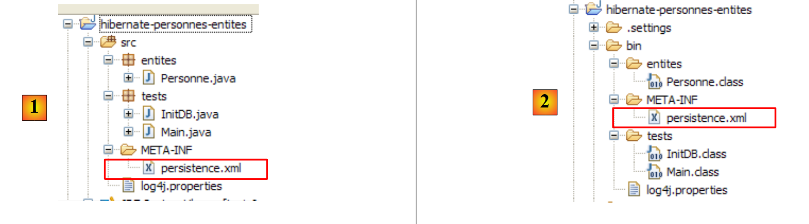
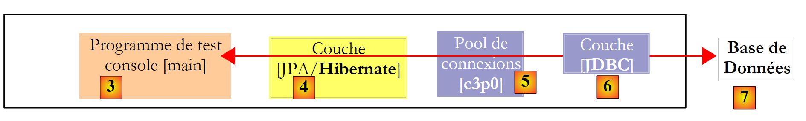
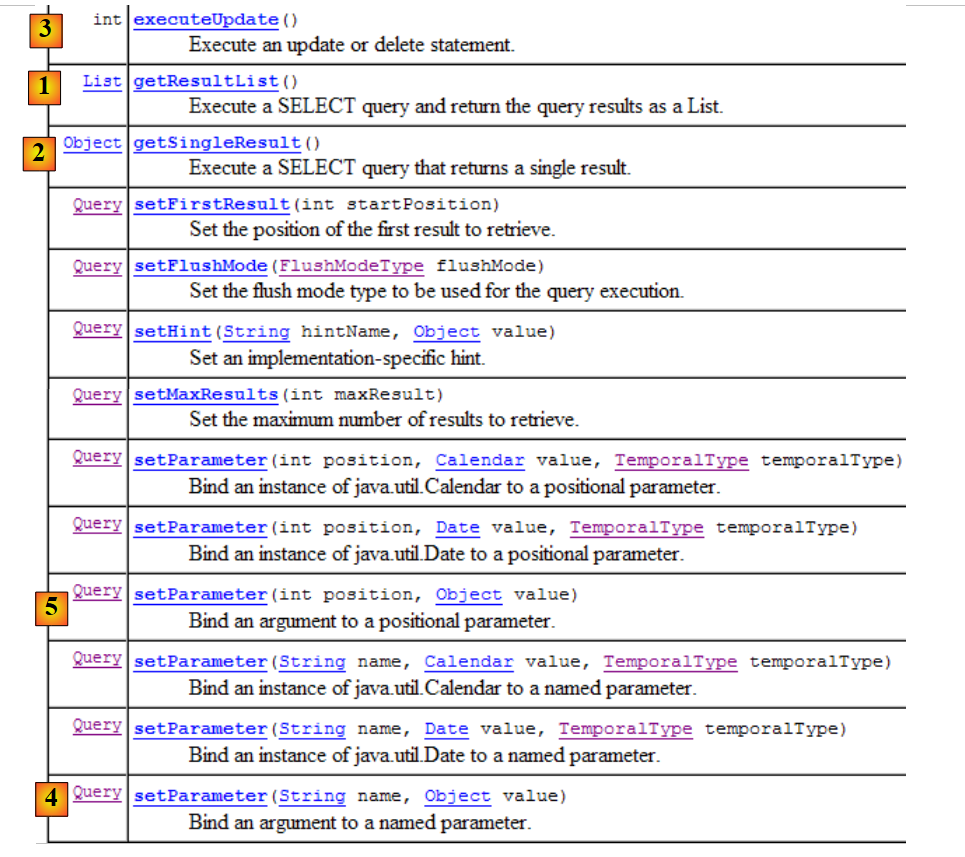
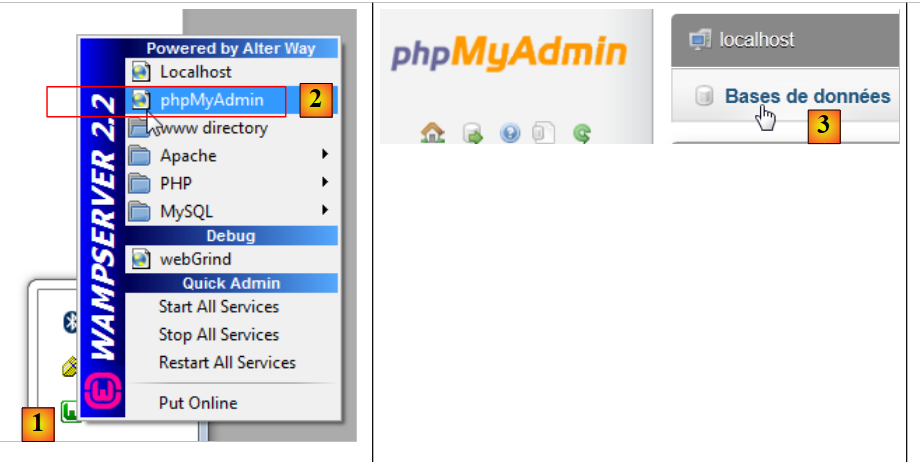
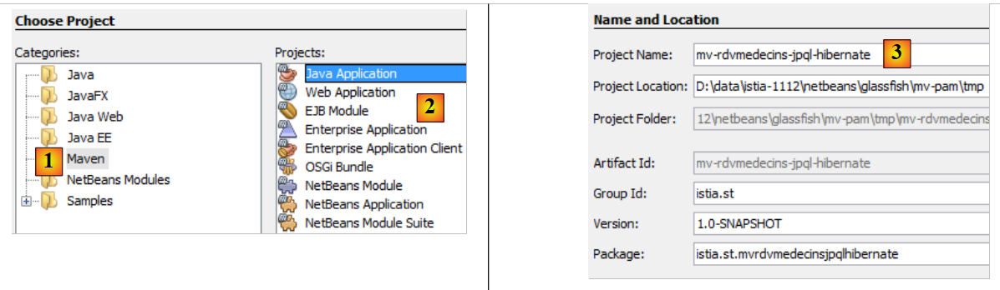
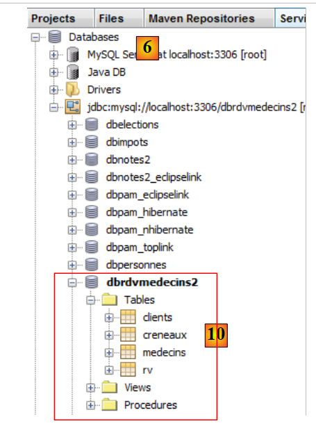
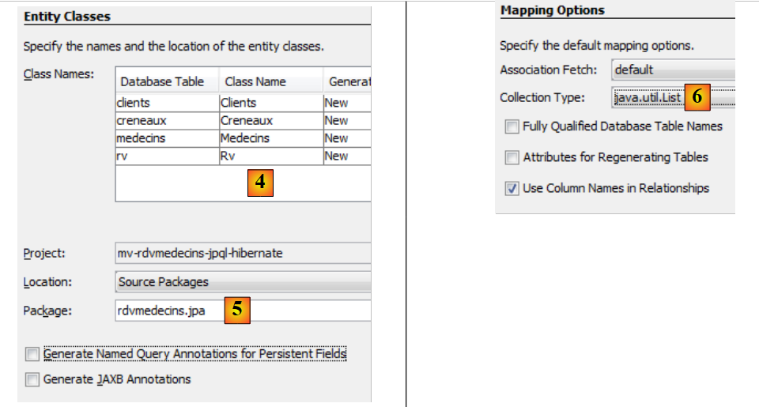

4. JPA : een samenvatting
We willen JPA (Java Persistence API) introduceren aan de hand van enkele voorbeelden. JPA wordt behandeld in de cursus:
- Java 5-persistentie in de praktijk: [http://tahe.developpez.com/java/jpa] – biedt de tools om de gegevenslaag op te bouwen met JPA
4.1. De plaats van JPA in een gelaagde architectuur
De lezer wordt verzocht het begin van dit document (paragraaf 2) nog eens door te lezen, waarin de rol van de JPA-laag in een gelaagde architectuur wordt uitgelegd. De JPA-laag maakt deel uit van de gegevenslaag:
 |
De laag [DAO] communiceert met de specificatie JPA. Ongeacht het product dat deze specificatie implementeert, blijft de interface van de laag JPA die aan de laag [DAO] wordt aangeboden, hetzelfde. Hieronder presenteren we enkele voorbeelden uit [ref1] waarmee we onze eigen laag JPA kunnen bouwen.
4.2. JPA - voorbeelden
4.2.1. Voorbeeld 1 - Objectweergave van een enkele tabel
4.2.1.1. De tabel [personne]
Laten we eens kijken naar een database met één enkele tabel [personne], die bedoeld is om bepaalde gegevens over personen op te slaan:
 |
primaire sleutel van de tabel | |
versienummer van de rij in de tabel. Telkens wanneer de persoon wordt gewijzigd, wordt het versienummer verhoogd. | |
naam van de persoon | |
voornaam | |
geboortedatum | |
geheel getal 0 (ongehuwd) of 1 (gehuwd) | |
aantal kinderen van de persoon |
4.2.1.2. De entiteit [Personne]
We bevinden ons in de volgende uitvoeringsomgeving:
 |
De laag JPA [5] moet een brug slaan tussen de relationele wereld van de database [7] en de objectwereld [4] die door de Java-programma's [3]. Deze brug wordt gelegd via de configuratie en er zijn twee manieren om dit te doen:
- met XML-bestanden. Dit was vrijwel de enige manier om dit te doen tot de komst van JDK 1.5
- met Java-annotaties sinds JDK 1.5
In dit document zullen we uitsluitend de tweede methode gebruiken.
Het [Personne]-object, een afbeelding van de eerder gepresenteerde tabel [personne], zou er als volgt uit kunnen zien:
...
@SuppressWarnings("unused")
@Entity
@Table(name="Personne")
public class Personne implements Serializable{
@Id
@Column(name = "ID", nullable = false)
@GeneratedValue(strategy = GenerationType.AUTO)
private Integer id;
@Column(name = "VERSION", nullable = false)
@Version
private int version;
@Column(name = "NOM", length = 30, nullable = false, unique = true)
private String nom;
@Column(name = "PRENOM", length = 30, nullable = false)
private String prenom;
@Column(name = "DATENAISSANCE", nullable = false)
@Temporal(TemporalType.DATE)
private Date datenaissance;
@Column(name = "MARIE", nullable = false)
private boolean marie;
@Column(name = "NBENFANTS", nullable = false)
private int nbenfants;
// fabrikanten
public Personne() {
}
public Personne(String nom, String prenom, Date datenaissance, boolean marie,
int nbenfants) {
setNom(nom);
setPrenom(prenom);
setDatenaissance(datenaissance);
setMarie(marie);
setNbenfants(nbenfants);
}
// toString
public String toString() {
...
}
// getters en setters
...
}
De configuratie gebeurt met behulp van Java-annotaties @Annotation. Java-annotaties worden ofwel door de compiler verwerkt, ofwel door gespecialiseerde tools tijdens de uitvoering. Behalve de annotatie op regel 3, die voor de compiler is bedoeld, zijn alle annotaties hier bedoeld voor de gebruikte implementatie JPA, Hibernate of Toplink. Ze worden dus tijdens de uitvoering verwerkt. Als er geen tools beschikbaar zijn die deze annotaties kunnen interpreteren, worden ze genegeerd. Zo zou de bovenstaande klasse [Personne] buiten de JPA-context kunnen worden gebruikt.
Er moet onderscheid worden gemaakt tussen twee gevallen waarin de annotaties JPA worden gebruikt in een C-klasse die gekoppeld is aan een tabel T:
- de tabel T bestaat al: de JPA-annotaties moeten dan de bestaande gegevens weergeven (naam en definitie van de kolommen, integriteitsbeperkingen, vreemde sleutels, primaire sleutels, ...)
- de tabel T bestaat niet en wordt aangemaakt op basis van de annotaties in klasse C.
Geval 2 is het eenvoudigst te behandelen. Met behulp van de annotaties JPA geven we de gewenste structuur van de tabel T aan. Geval 1 is vaak complexer. De tabel T is mogelijk lang geleden aangemaakt, buiten elke JPA-context om. De structuur ervan is dan mogelijk slecht afgestemd op de relationele/objectbrug van JPA. Om het eenvoudig te houden, gaan we uit van geval 2, waarbij de tabel T die bij klasse C hoort, wordt aangemaakt op basis van de annotaties JPA van klasse C.
Laten we de annotaties JPA van de klasse [Personne] toelichten:
- regel 4: de annotatie @Entity is de eerste onmisbare annotatie. Deze wordt vóór de regel geplaatst waarin de klasse wordt gedeclareerd en geeft aan dat de betreffende klasse moet worden beheerd door de persistentielaag JPA. Zonder deze annotatie zouden alle andere annotaties JPA worden genegeerd.
- regel 5: de annotatie @Table verwijst naar de databasetabel die door de klasse wordt weergegeven. Het belangrijkste argument is name, dat de naam van de tabel aangeeft. Als dit argument ontbreekt, krijgt de tabel de naam van de klasse, in dit geval [Personne]. In ons voorbeeld is de annotatie @Table dus overbodig.
- regel 8: de annotatie @Id wordt gebruikt om het veld in de klasse aan te duiden dat de primaire sleutel van de tabel vertegenwoordigt. Deze annotatie is verplicht. Ze geeft hier aan dat het veld id op regel 11 de primaire sleutel van de tabel vertegenwoordigt.
- regel 9: de annotatie @Column dient om een veld van de klasse te koppelen aan de kolom in de tabel waarvan het veld de weergave is. Het attribuut name geeft de naam van de kolom in de tabel aan. Als dit attribuut ontbreekt, krijgt de kolom dezelfde naam als het veld. In ons voorbeeld was het argument name dus niet verplicht. Het argument `nullable=false` geeft aan dat de kolom die aan het veld is gekoppeld niet de waarde `NULL` mag hebben en dat het veld dus noodzakelijkerwijs een waarde moet hebben.
- regel 10: de annotatie @GeneratedValue geeft aan hoe de primaire sleutel wordt gegenereerd wanneer deze automatisch wordt gegenereerd door de SGBD. Dit zal in al onze voorbeelden het geval zijn. Dit is niet verplicht. Zo zou onze persoon een studentnummer kunnen hebben dat als primaire sleutel dient en dat niet door de SGBD wordt gegenereerd, maar door de applicatie wordt vastgesteld. In dat geval zou de annotatie @GeneratedValue ontbreken. Het argument strategy geeft aan hoe de primaire sleutel wordt gegenereerd wanneer deze door de SGBD wordt gegenereerd. Niet alle SGBD-codes gebruiken dezelfde techniek voor het genereren van primaire sleutelwaarden. Bijvoorbeeld:
gebruikt een waardegenerator die vóór elke invoeging wordt aangeroepen | |
is het primaire sleutelveld gedefinieerd als het type Identity. Dit levert een resultaat op dat vergelijkbaar is met de waardegenerator van Firebird, behalve dat de waarde van de sleutel pas bekend is nadat de rij is ingevoegd. | |
maakt gebruik van een object met de naam SEQUENCE, dat ook hier de rol van waardegenerator vervult |
De laag JPA moet verschillende SQL-opdrachten genereren, afhankelijk van de SGBD, om de waardegenerator te creëren. Via de configuratie wordt aangegeven welk type SGBD deze laag moet verwerken. Daardoor kan de laag bepalen wat de gebruikelijke strategie is voor het genereren van primaire sleutelwaarden voor dit SGBD. Het argument strategy = GenerationType.AUTO geeft aan de JPA-laag door dat deze de gebruikelijke strategie moet toepassen. Deze techniek werkte in alle voorbeelden in dit document voor de zeven gebruikte SGBD-tabellen.
- regel 14: de annotatie @Version geeft het veld aan dat wordt gebruikt om gelijktijdige toegang tot dezelfde rij in de tabel te beheren.
Om dit probleem van gelijktijdige toegang tot dezelfde rij in de tabel [personne] te begrijpen, gaan we ervan uit dat een webapplicatie het bijwerken van een persoon toestaat en bekijken we het volgende geval:
Op tijdstip T1 begint een gebruiker U1 met het bewerken van een persoon P. Op dat moment is het aantal kinderen 0. Hij wijzigt dit aantal in 1, maar voordat hij zijn wijziging bevestigt, begint een gebruiker met ID U2 met het bewerken van dezelfde persoon P. Aangezien U1 zijn wijziging nog niet heeft bevestigd, ziet U2 op zijn scherm dat het aantal kinderen op 0 staat. U2 zet de naam van persoon P in hoofdletters. Vervolgens bevestigen U1 en U2 hun wijzigingen in deze volgorde. De wijziging van U2 zal prevaleren: in de database wordt de naam in hoofdletters weergegeven en blijft het aantal kinderen op nul staan, terwijl U1 denkt dat hij dit in 1 heeft gewijzigd.
Het begrip ‘persoonsversie’ helpt ons dit probleem op te lossen. We nemen hetzelfde gebruiksscenario:
Op het moment T1 begint een gebruiker U1 met het bewerken van een persoon P. Op dat moment is het aantal kinderen 0 en is de versie V1. Hij wijzigt het aantal kinderen in 1, maar voordat hij zijn wijziging bevestigt, begint een gebruiker met ID U2 met het bewerken van dezelfde persoon P. Aangezien U1 zijn wijziging nog niet heeft bevestigd, ziet U2 dat het aantal kinderen op 0 staat en de versie op V1. U2 zet de naam van persoon P in hoofdletters. Vervolgens bevestigen U1 en U2 hun wijzigingen in deze volgorde. Voordat een wijziging wordt bevestigd, wordt gecontroleerd of degene die persoon P wijzigt, dezelfde versie heeft als de momenteel geregistreerde persoon P. Dit is het geval voor gebruiker U1. Zijn wijziging wordt dus geaccepteerd en vervolgens wordt de versie van de gewijzigde persoon veranderd van V1 naar V2 om aan te geven dat de persoon een wijziging heeft ondergaan. Bij het valideren van de wijziging van U2, zullen we merken dat U2 een versie V1 van persoon P bevat, terwijl de huidige versie daarvan V2 is. We kunnen de gebruiker U2 dan vertellen dat iemand hem voor was en dat hij opnieuw moet beginnen met de nieuwe versie van persoon P. Hij zal dit doen, persoon P met versie V2 ophalen – die nu een kind heeft –, de naam in hoofdletters zetten en de wijziging bevestigen. Zijn wijziging wordt geaccepteerd als de geregistreerde persoon P nog steeds versie V2 heeft. Uiteindelijk worden de wijzigingen die zijn aangebracht door U1 en U2 meegenomen, terwijl in het gebruiksscenario zonder versies één van de wijzigingen verloren zou zijn gegaan.
De laag [DAO] van de clienttoepassing kan zelf de versie van de klasse [Personne] beheren. Telkens wanneer er een wijziging in een P-object plaatsvindt, wordt de versie van dit object in de tabel met 1 verhoogd. Met de annotatie @Version kan dit beheer worden overgedragen aan de laag JPA. Het betreffende veld hoeft helemaal niet version te heten, zoals in het voorbeeld. Het kan elke willekeurige naam hebben.
De velden die overeenkomen met de annotaties @Id en @Version zijn velden die aanwezig zijn vanwege de persistentie. Deze zouden niet nodig zijn als de klasse [Personne] niet persistent hoefde te zijn. We zien dus dat een object niet dezelfde weergave heeft, afhankelijk van het feit of het al dan niet persistent moet zijn.
- regel 17: opnieuw de annotatie @Column om informatie te geven over de kolom van de tabel [personne] die gekoppeld is aan het veld nom van de klasse Personne. Hier zien we twee nieuwe argumenten:
- unique=true geeft aan dat de naam van een persoon uniek moet zijn. Dit vertaalt zich in de database in het toevoegen van een uniekheidsbeperking op de kolom NOM van de tabel [personne].
- length=30 stelt het aantal tekens van de kolom NOM vast op 30. Dit betekent dat het type van deze kolom VARCHAR(30) zal zijn.
- regel 24: de annotatie @Temporal wordt gebruikt om aan te geven welk type SQL moet worden toegekend aan een kolom/veld van het type datum/tijd. Het type TemporalType.DATE verwijst naar een datum zonder bijbehorende tijd. Andere mogelijke typen zijn TemporalType.TIME voor het coderen van een tijd en TemporalType.TIMESTAMP voor het coderen van een datum met tijd.
Laten we nu de rest van de code van de klasse [Personne] toelichten:
- regel 6: de klasse implementeert de interface Serializable. De sérialisation van een object bestaat uit het omzetten ervan in een reeks bits. De désérialisation is de omgekeerde bewerking. Serialisatie/deserialisatie wordt met name gebruikt in client/server-toepassingen waarbij objecten via het netwerk worden uitgewisseld. Client- of servertoepassingen zijn zich niet bewust van deze bewerking, die op transparante wijze wordt uitgevoerd door de JVM. Om dit mogelijk te maken, moeten de klassen van de uitgewisselde objecten echter worden ‘getagd’ met het sleutelwoord Serializable.
- regel 37: een constructor van de klasse. Merk op dat de velden id en version geen deel uitmaken van de parameters. Deze twee velden worden namelijk beheerd door de JPA-laag en niet door de applicatie.
- regels 51 en verder: de get- en set-methoden van elk van de velden van de klasse. Merk op dat de annotaties JPA op de get-methoden van de velden kunnen worden geplaatst in plaats van op de velden zelf. De plaats van de annotaties geeft aan welke modus JPA moet gebruiken om toegang te krijgen tot de velden:
- als de annotaties op veldniveau worden geplaatst, zal JPA rechtstreeks toegang krijgen tot de velden om ze te lezen of te schrijven
- als de annotaties op get-niveau worden geplaatst, zal JPA via de get-/set-methoden toegang krijgen tot de velden om ze te lezen of te schrijven
De positie van de @Id-annotatie bepaalt de positie van de JPA-annotaties in een klasse. Als deze op veldniveau wordt geplaatst, duidt dit op directe toegang tot de velden; als deze op get-niveau wordt geplaatst, duidt dit op toegang tot de velden via de get en set. De overige annotaties moeten dan op dezelfde manier worden geplaatst als de @Id-annotatie.
4.2.2. Configuratie van de laag JPA
De tests van de laag JPA kunnen worden uitgevoerd met de volgende architectuur:
 |
- in [7]: de database die wordt gegenereerd op basis van de annotaties van de entiteit [Personne] en aanvullende configuraties in een bestand met de naam [persistence.xml]
- naar [5, 6]: een laag JPA geïmplementeerd door Hibernate
- in [4]: de entiteit [Personne]
- in [3]: een testprogramma van het type console
De configuratie van de laag JPA wordt verzorgd door het bestand [META-INF/persistence.xml]:
 |
Bij uitvoering wordt het bestand [META-INF/persistence.xml] gezocht in het bestand Classpath van de applicatie.
Laten we de configuratie van de laag JPA bekijken die is vastgelegd in het bestand [persistence.xml] van ons project:
<?xml version="1.0" encoding="UTF-8"?>
<persistence version="1.0" xmlns="http://java.sun.com/xml/ns/persistence">
<persistence-unit name="jpa" transaction-type="RESOURCE_LOCAL">
<!-- provider -->
<provider>org.hibernate.ejb.HibernatePersistence</provider>
<properties>
<!-- Persistente klassen -->
<property name="hibernate.archive.autodetection" value="class, hbm" />
<!-- logs SQL
<property name="hibernate.show_sql" value="true"/>
<property name="hibernate.format_sql" value="true"/>
<property name="use_sql_comments" value="true"/>
-->
<!-- verbinding JDBC -->
<property name="hibernate.connection.driver_class" value="com.mysql.jdbc.Driver" />
<property name="hibernate.connection.url" value="jdbc:mysql://localhost:3306/jpa" />
<property name="hibernate.connection.username" value="jpa" />
<property name="hibernate.connection.password" value="jpa" />
<!-- automatische aanmaak van het schema -->
<property name="hibernate.hbm2ddl.auto" value="create" />
<!-- Dialect -->
<property name="hibernate.dialect" value="org.hibernate.dialect.MySQL5InnoDBDialect" />
<!-- eigenschappen DataSource c3p0 -->
<property name="hibernate.c3p0.min_size" value="5" />
<property name="hibernate.c3p0.max_size" value="20" />
<property name="hibernate.c3p0.timeout" value="300" />
<property name="hibernate.c3p0.max_statements" value="50" />
<property name="hibernate.c3p0.idle_test_period" value="3000" />
</properties>
</persistence-unit>
</persistence>
Om deze configuratie te begrijpen, moeten we teruggaan naar de architectuur van de gegevenstoegang in onze applicatie:
 |
- het bestand [persistence.xml] configureert de lagen [4, 5, 6]
- [4]: Hibernate-implementatie van JPA
- [5]: Hibernate heeft toegang tot de database via een verbindingspool. Een verbindingspool is een voorraad open verbindingen met SGBD. Een SGBD wordt door meerdere gebruikers benaderd, terwijl het om prestatieredenen niet meer dan een limiet N aan gelijktijdig geopende verbindingen mag hebben. Goed geschreven code opent zo kort mogelijk een verbinding met de SGBD: de code voert SQL-opdrachten uit en sluit vervolgens de verbinding. Dit gebeurt herhaaldelijk, telkens wanneer de code met de database moet werken. De kosten voor het openen en sluiten van een verbinding zijn niet te verwaarlozen en hier komt de verbindingspool om de hoek kijken. Deze opent bij het opstarten van de applicatie N1 verbindingen met de SGBD. De applicatie vraagt bij de pool om een open verbinding wanneer deze nodig is. Deze wordt aan de pool teruggegeven zodra de applicatie deze niet meer nodig heeft, bij voorkeur zo snel mogelijk. De verbinding wordt niet gesloten en blijft beschikbaar voor de volgende gebruiker. Een verbindingspool is dus een systeem voor het delen van open verbindingen.
- [6]: de driver JDBC van de gebruikte SGBD
Laten we nu eens kijken hoe het bestand [persistence.xml] de bovenstaande lagen [4, 5, 6] configureert:
- regel 2: de root-tag van het bestand XML is <persistence>.
- regel 3: <persistence-unit> wordt gebruikt om een persistentie-eenheid te definiëren. Er kunnen meerdere persistentie-eenheden zijn. Elk daarvan heeft een naam (attribuut name) en een transactietype (attribuut transaction-type). De applicatie krijgt toegang tot de persistentie-eenheid via de naam ervan, in dit geval jpa. Het transactietype RESOURCE_LOCAL geeft aan dat de applicatie zelf de transacties met SGBD beheert. Dat is hier het geval. Wanneer de applicatie in een EJB3-container draait, kan zij gebruikmaken van de transactieservice van die container. In dit geval wordt transaction-type=JTA (Java Transaction API) ingesteld. JTA is de standaardwaarde wanneer het attribuut transaction-type ontbreekt.
- regel 5: de tag <provider> wordt gebruikt om een klasse te definiëren die de interface [javax.persistence.spi.PersistenceProvider] implementeert; deze interface stelt de applicatie in staat de persistentielayer te initialiseren. Omdat we een JPA-/Hibernate-implementatie gebruiken, is de hier gebruikte klasse een Hibernate-klasse.
- regel 6: de tag <properties> introduceert eigenschappen die specifiek zijn voor de gekozen provider. Afhankelijk van of je Hibernate, Toplink, Kodo, ... hebt gekozen, zul je dus verschillende eigenschappen hebben. De volgende eigenschappen zijn specifiek voor Hibernate.
- regel 8: vraagt Hibernate om de classpath van het project te doorzoeken op klassen met de annotatie @Entity, om deze te beheren. De @Entity-klassen kunnen ook worden gedeclareerd met <class>nom_de_la_classe</class>-tags, direct onder de <persistence-unit>-tag. Dit is wat we zullen doen met de provider JPA / Toplink.
- De regels 10-12, die hier zijn uitgecommentarieerd, configureren de console-logs van Hibernate:
- regel 10: om al dan niet de door Hibernate uitgevoerde SQL-opdrachten op de SGBD weer te geven. Dit is erg nuttig tijdens de leerfase. Vanwege de relatie tussen relaties en objecten werkt de applicatie met persistente objecten waarop ze bewerkingen van het type [persist, merge, remove] toepast. Het is zeer interessant om te weten welke SQL-opdrachten daadwerkelijk bij deze bewerkingen worden gegenereerd. Door deze te bestuderen, krijg je langzamerhand een idee van de SQL-opdrachten die Hibernate zal genereren wanneer je een bepaalde bewerking uitvoert op de persistente objecten, en begint de relatie-objectbrug in je hoofd vorm te krijgen.
- regel 11: de SQL-opdrachten die op de console worden weergegeven, kunnen netjes worden opgemaakt om ze gemakkelijker leesbaar te maken
- regel 12: de weergegeven SQL-opdrachten worden bovendien van commentaar voorzien
- de regels 15-19 definiëren de laag JDBC (laag [6] in de architectuur):
- regel 15: de driverklasse JDBC van de SGBD, hier MySQL5
- regel 16: de URL van de gebruikte database
- regels 17, 18: de gebruiker van de verbinding en zijn wachtwoord
- regel 22: Hibernate moet weten met welke SGBD het te maken heeft. De SGBD-en hebben namelijk allemaal eigen SQL-extensies, een eigen manier om de automatische generatie van primaire sleutelwaarden te beheren, ... waardoor Hibernate de SGBD moet kennen waarmee het werkt, om de SQL-opdrachten te kunnen verzenden die deze zal begrijpen. [MySQL5InnoDBDialect] verwijst naar de SGBD MySQL5 met tabellen van het type InnoDB die transacties ondersteunen.
- de regels 24-28 configureren de verbindingspool c3p0 (laag [5] in de architectuur):
- regels 24, 25: het minimale (standaard 3) en maximale aantal verbindingen (standaard 15) in de pool. Het standaard aantal verbindingen bij het opstarten is 3.
- regel 26: maximale wachttijd in milliseconden voor een verbindingsverzoek van de client. Na deze tijd stuurt c3p0 een uitzondering terug.
- regel 27: om toegang te krijgen tot de BD, gebruikt Hibernate voorbereide SQL-opdrachten (PreparedStatement) die c3p0 in de cache kan opslaan. Dit betekent dat als de applicatie voor de tweede keer een voorbereide SQL-opdracht opvraagt die al in de cache staat, deze niet opnieuw hoeft te worden voorbereid (het voorbereiden van een SQL-opdracht brengt kosten met zich mee) en de opdracht uit de cache wordt gebruikt. Hier wordt het maximale aantal voorbereide SQL-opdrachten aangegeven dat de cache kan bevatten, voor alle verbindingen samen (een voorbereide SQL-opdracht hoort bij één verbinding).
- regel 28: frequentie in milliseconden waarmee de geldigheid van de verbindingen wordt gecontroleerd. Een verbinding uit de pool kan om verschillende redenen ongeldig worden (de driver JDBC maakt de verbinding ongeldig omdat deze te lang duurt, de driver JDBC vertoont "bugs", ...).
- regel 20: hier wordt gevraagd dat bij het initialiseren van de persistentie-eenheid de databasestructuur van de @Entity-objecten wordt gegenereerd. Hibernate beschikt nu over alle tools om de SQL-opdrachten voor het genereren van de databasetabellen uit te voeren:
- aan de hand van de configuratie van de @Entity-objecten weet het welke tabellen moeten worden gegenereerd
- de regels 15-18 en 24-28 stellen het in staat een verbinding met de SGBD tot stand te brengen
- regel 22 geeft aan welk dialect SQL moet worden gebruikt om de tabellen te genereren
Het hier gebruikte bestand [persistence.xml] maakt dus bij elke nieuwe uitvoering van de applicatie een nieuwe database aan. De tabellen worden opnieuw aangemaakt (create table) nadat ze zijn verwijderd (drop table), mochten ze al bestaan. Let wel: dit mag uiteraard niet worden gedaan met een productiedatabase...
4.2.3. Voorbeeld 2: één-op-veel-relatie
4.2.3.1. Het schema van de database ' '
1  | 2 |
- in [1], de database en in [2], de bijbehorende DDL (MySQL5)
Een artikel A(id, versie, naam) behoort precies tot één categorie C(id, versie, naam). Een categorie C kan 0, 1 of meerdere artikelen bevatten. Er is sprake van een één-op-veel-relatie (Categorie -> Artikel) en de omgekeerde veel-op-één-relatie (Artikel -> Categorie). Deze relatie wordt weergegeven door de vreemde sleutel die de tabel [article] heeft op de tabel [categorie] (regels 24-28 van de DDL).
4.2.3.2. De @Entity-objecten die de database vertegenwoordigen
Een artikel wordt vertegenwoordigd door de volgende @Entity [Article]:
package entites;
...
@Entity
@Table(name="jpa05_hb_article")
public class Article implements Serializable {
// velden
@Id
@GeneratedValue(strategy = GenerationType.AUTO)
private Long id;
@SuppressWarnings("unused")
@Version
private int version;
@Column(length = 30)
private String nom;
// hoofdrelatie Artikel (many) -> Categorie (one)
// geïmplementeerd door een vreemde sleutel (categorie_id) in Artikel
// 1 Artikel heeft noodzakelijkerwijs 1 Categorie (nullable=false)
@ManyToOne(fetch=FetchType.LAZY)
@JoinColumn(name = "categorie_id", nullable = false)
private Categorie categorie;
// constructors
public Article() {
}
// getters en setters
...
// toString
public String toString() {
return String.format("Article[%d,%d,%s,%d]", id, version, nom, categorie.getId());
}
}
- regels 9-11: primaire sleutel van de @Entity
- regels 13-15: het versienummer
- regels 17-18: naam van het artikel
- regels 20-25: een veel-op-één-relatie die de @Entity Article koppelt aan de @Entity Categorie:
- regel 23: de annotatie ManyToOne. De ‘Many’ verwijst naar de @Entity Article waarin we ons bevinden en de ‘One’ naar de @Entity Categorie (regel 25). Een categorie (One) kan meerdere artikelen (Many) hebben.
- regel 24: de annotatie ManyToOne definieert de vreemde-sleutelkolom in de tabel [article]. Deze kolom heet (name) categorie_id en elke rij moet een waarde in deze kolom bevatten (nullable=false).
- regel 25: de categorie waartoe het artikel behoort. Wanneer een artikel in de persistentie-context wordt geplaatst, wordt gevraagd om de categorie niet onmiddellijk mee op te nemen (fetch=FetchType.LAZY, regel 23). Het is onduidelijk of dit verzoek zin heeft. We zullen zien.
Een categorie wordt vertegenwoordigd door de volgende @Entity [Categorie]:
package entites;
...
@Entity
@Table(name="jpa05_hb_categorie")
public class Categorie implements Serializable {
// velden
@Id
@GeneratedValue(strategy = GenerationType.AUTO)
private Long id;
@SuppressWarnings("unused")
@Version
private int version;
@Column(length = 30)
private String nom;
// omgekeerde relatie Categorie (één) -> Artikel (veel) van de relatie Artikel (veel) -> Categorie (één)
// cascade-invoeging Categorie -> invoeging Artikelen
// cascade-update Categorie -> update Artikelen
// cascade verwijdering Categorie -> verwijdering Artikelen
@OneToMany(mappedBy = "categorie", cascade = { CascadeType.ALL })
private Set<Article> articles = new HashSet<Article>();
// constructors
public Categorie() {
}
// getters en setters
...
// toString
public String toString() {
return String.format("Categorie[%d,%d,%s]", id, version, nom);
}
// bidirectionele koppeling Categorie <--> Artikel
public void addArticle(Article article) {
// het artikel wordt toegevoegd aan de verzameling artikelen van de categorie
articles.add(article);
// het artikel verandert van categorie
article.setCategorie(this);
}
}
- regels 8-11: de primaire sleutel van de @Entity
- regels 12-14: de versie ervan
- regels 16-17: de naam van de categorie
- regels 19-24: de verzameling (set) van artikelen in de categorie
- regel 23: de annotatie @OneToMany duidt een één-op-veel-relatie aan. De ‘One’ verwijst naar de @Entity [Categorie] waarin we ons bevinden, de ‘Many’ naar het type [Article] uit regel 24: één (One) categorie heeft meerdere (Many) artikelen.
- regel 23: de annotatie is het omgekeerde (mappedBy) van de annotatie ManyToOne die is geplaatst op het veld categorie van de @Entity Article: mappedBy=categorie. De relatie ManyToOne die is geplaatst op het veld categorie van de @Entity Article is de hoofdrelatie. Deze is onmisbaar. Deze relatie vormt de vreemde-sleutelrelatie die de @Entity Article koppelt aan de @Entity Categorie. De relatie OneToMany, die is gedefinieerd op het veld articles van de @Entity Categorie, is de omgekeerde relatie. Deze is niet onmisbaar. Het is een handige functie om de artikelen van een categorie op te halen. Zonder deze functie zouden deze artikelen worden opgehaald via een query JPQL.
- regel 23: cascadeType.ALL zorgt ervoor dat de bewerkingen (persist, merge, remove) die worden uitgevoerd op een @Entity Categorie, worden doorgevoerd op de bijbehorende artikelen.
- regel 24: de artikelen van een categorie worden in een object van het type Set<Article> geplaatst. Het type Set accepteert geen duplicaten. Het is dus niet mogelijk om hetzelfde artikel twee keer in het object Set<Article> te plaatsen. Wat wordt bedoeld met „hetzelfde artikel“? Om aan te geven dat artikel a hetzelfde is als artikel b, gebruikt Java de uitdrukking a.equals(b). In de klasse Object, de bovenliggende klasse van alle klassen, is a.equals(b) waar als a==b, c.a.d. als de objecten a en b dezelfde geheugenlocatie hebben. Men zou kunnen willen zeggen dat de artikelen a en b hetzelfde zijn als ze dezelfde naam hebben. In dat geval moet de ontwikkelaar twee methoden herdefiniëren in de klasse [Article]:
- equals: moet waar opleveren als beide items dezelfde naam hebben
- hashCode: moet een identieke gehele waarde retourneren voor twee objecten [Article] die door de methode equals als gelijk worden beschouwd. Hier wordt de waarde dus samengesteld op basis van de naam van het artikel. De waarde die door hashCode wordt geretourneerd, kan een willekeurig geheel getal zijn. Deze waarde wordt gebruikt in verschillende objectcontainers, met name in hashtabellen (Hashtable).
De relatie OneToMany kan andere typen dan de Set gebruiken om de Many op te slaan, bijvoorbeeld List-objecten. We zullen deze gevallen in dit document niet behandelen. De lezer vindt ze in [ref1].
- regel 38: met de methode [addArticle] kunnen we een artikel aan een categorie toevoegen. De methode zorgt ervoor dat beide uiteinden van de relatie OneToMany, die [Categorie] met [Article] verbindt, worden bijgewerkt.
4.3. De API van de laag JPA
Laten we de uitvoeringsomgeving van een client JPA toelichten:
 |
We weten dat de laag JPA [2] een brug vormt tussen de objectlaag [3] en de relationele laag [4]. De verzameling objecten die door de laag JPA wordt beheerd in het kader van deze object-relationele brug, wordt de „persistentiecontext” genoemd. Om toegang te krijgen tot de gegevens van de persistentiecontext moet een client JPA [1] via de laag JPA [2] werken:
- hij kan een object aanmaken en de laag JPA vragen om het persistent te maken. Het object maakt dan deel uit van de persistentiecontext.
- het kan de laag [JPA] vragen om een verwijzing naar een bestaand persistent object.
- hij kan een persistent object wijzigen dat is verkregen van de laag JPA.
- hij kan de laag JPA vragen om een object uit de persistentiecontext te verwijderen.
De laag JPA biedt de client een interface met de naam [EntityManager], die, zoals de naam al aangeeft, het beheer van @Entity-objecten in de persistentie-context mogelijk maakt. Hieronder worden de belangrijkste methoden van deze interface weergegeven:
plaatst entity in de persistentiecontext | |
verwijdert entity uit de persistentiecontext | |
voegt een object entity van de client, dat niet door de persistentiecontext wordt beheerd, samen met het object entity uit de persistentiecontext met dezelfde primaire sleutel. Het resultaat is het object entity uit de persistentiecontext. | |
plaatst in de persistentiecontext een object dat in de database is opgezocht via de primaire sleutel. Het type T van het object stelt de laag JPA te bepalen welke tabel moet worden opgevraagd. Het aldus aangemaakte persistente object wordt teruggestuurd naar de client. | |
maakt een Query-object aan op basis van een query JPQL (Java Persistence Query Language). Een query JPQL is vergelijkbaar met een query SQL, behalve dat er objecten worden opgevraagd in plaats van tabellen. | |
methode die vergelijkbaar is met de vorige, behalve dat queryText een opdracht SQL en niet JPQL. | |
methode identiek aan createQuery, behalve dat de volgorde JPQL queryText is uitbesteed aan een configuratiebestand en aan een naam gekoppeld. Deze naam is de parameter van de methode. |
Een object EntityManager heeft een levenscyclus die niet noodzakelijkerwijs dezelfde is als die van de applicatie. Het heeft een begin en een einde. Zo kan een client JPA achtereenvolgens met verschillende objecten EntityManager werken. De persistentiecontext die aan een EntityManager is gekoppeld, heeft dezelfde levenscyclus als het object zelf. Ze zijn onlosmakelijk met elkaar verbonden. Wanneer een EntityManager-object wordt gesloten, wordt de bijbehorende persistentiecontext indien nodig gesynchroniseerd met de database, waarna deze niet langer bestaat. Er moet een nieuw EntityManager worden aangemaakt om weer over een persistentiecontext te beschikken.
De client JPA kan een EntityManager en daarmee een persistentiecontext aanmaken met de volgende instructie:
EntityManagerFactory emf = Persistence.createEntityManagerFactory("nom d'une unité de persistance");
- javax.persistence.Persistence is een statische klasse waarmee een factory voor EntityManager-objecten kan worden verkregen. Deze factory is gekoppeld aan een specifieke persistentie-eenheid. Zoals bekend kunnen in het configuratiebestand [META-INF/persistence.xml] persistentie-eenheden worden gedefinieerd en hebben deze een naam:
<persistence-unit name="elections-dao-jpa-mysql-01PU" transaction-type="RESOURCE_LOCAL">
Hierboven heet de persistentie-eenheid elections-dao-jpa-mysql-01PU. Daarbij hoort een volledige, eigen configuratie, met name de SGBD waarmee deze samenwerkt. De instructie [Persistence.createEntityManagerFactory("elections-dao-jpa-mysql-01PU")] creëert een objectfabriek van het type EntityManagerFactory die in staat is om EntityManager-objecten te leveren, bedoeld voor het beheer van persistentie-contexten die gekoppeld zijn aan de persistentie-eenheid met de naam elections-dao-jpa-mysql-01PU. Het ophalen van een object van het type EntityManager en daarmee van een persistentiecontext gebeurt vanuit het object EntityManagerFactory op de volgende manier:
Met de volgende methoden van de interface [EntityManager] kan de levenscyclus van de persistentiecontext worden beheerd:
de persistentiecontext wordt gesloten. Dwingt de synchronisatie van de persistentiecontext met de database af:
| |
De persistentie-context wordt leeggemaakt van alle objecten, maar niet gesloten. | |
de persistentiecontext wordt gesynchroniseerd met de database op de manier die is beschreven voor close() |
De client JPA kan de synchronisatie van de persistentiecontext met de database forceren met de methode [EntityManager].flush hierboven. De synchronisatie kan expliciet of impliciet zijn. In het eerste geval is het aan de client om flush-bewerkingen uit te voeren wanneer hij synchronisaties wil uitvoeren; anders vindt de synchronisatie plaats op bepaalde momenten die we hieronder zullen specificeren. De synchronisatiemodus wordt beheerd door de volgende methoden van de interface [EntityManager]:
Er zijn twee mogelijke waarden voor flushmode: FlushModeType.AUTO (standaard): de synchronisatie vindt plaats vóór elk verzoek SELECT dat aan de database wordt gedaan. FlushModeType.COMMIT: de synchronisatie vindt pas plaats aan het einde van de transacties in de database. | |
geeft de huidige synchronisatiemodus weer |
Laten we het samenvatten. In de modus FlushModeType.AUTO, de standaardmodus, wordt de persistentiecontext op de volgende momenten met de database gesynchroniseerd:
- vóór elke bewerking SELECT in de database
- aan het einde van een transactie in de database
- na een flush- of close-bewerking op de persistentiecontext
In de modus FlushModeType.COMMIT geldt hetzelfde, behalve dat bewerking 1 niet plaatsvindt. De normale wijze van interactie met de JPA-laag is een transactionele modus. De client voert binnen een transactie diverse bewerkingen uit op de persistentiecontext. In dit geval zijn de synchronisatiemomenten van de persistentiecontext met de database de hierboven genoemde gevallen 1 en 2 in de modus AUTO, en uitsluitend geval 2 in de modus COMMIT.
Laten we afsluiten met de API van de Query-interface, waarmee JPQL-opdrachten naar de persistentiecontext kunnen worden verzonden of SQL-opdrachten rechtstreeks naar de database om daar gegevens op te halen. De Query-interface ziet er als volgt uit:
 |
- 1 - De methode getResultList voert een SELECT uit die meerdere objecten retourneert. Deze worden opgevangen in een object List. Dit object is een interface. Deze biedt een object Iterator waarmee de elementen van de lijst L in de volgende vorm kunnen worden doorlopen:
Iterator iterator = L.iterator();
while (iterator.hasNext()) {
// de functie iterator.next() aanroepen, die het huidige element van de lijst vertegenwoordigt
...
}
De lijst L kan ook worden gebruikt met een for:
for (Object o : L) {
// het object o gebruiken
}
- 2 - De methode getSingleResult voert een opdracht JPQL / SQL SELECT uit, die één enkel object retourneert.
- 3 - De methode executeUpdate voert een SQL-opdracht (update of delete) uit en retourneert het aantal rijen waarop de bewerking betrekking heeft.
- 4 - Met de methode setParameter(String, Object) kan een waarde worden toegekend aan een benoemde parameter van een geconfigureerde opdracht JPQL
- 5 - De methode setParameter(int, Object) gebruikt de parameter echter niet op naam, maar op basis van de positie ervan in de opdracht JPQL.
4.4. De query's JPQL
JPQL (Java Persistence Query Language) is de querytaal van de laag JPA. De taal JPQL is verwant aan de taal SQL van databases. Terwijl SQL met tabellen werkt, werkt JPQL met de afbeeldingsobjecten in deze tabellen. We zullen een voorbeeld bekijken binnen de volgende architectuur:
 |
De database die we [dbrdvmedecins2] zullen noemen, is een MySQL5-database met vier tabellen:
 |
Deze bevat informatie waarmee de afspraken van een groep artsen kunnen worden beheerd.
4.4.1. De tabel [MEDECINS]
Deze bevat informatie over de artsen.
 |  |
- ID: identificatienummer van de arts – primaire sleutel van de tabel
- VERSION: nummer dat de versie van de rij in de tabel identificeert. Dit nummer wordt met 1 verhoogd telkens wanneer er een wijziging in de rij wordt aangebracht.
- NOM: de achternaam van de arts
- PRENOM: zijn of haar voornaam
- TITRE: zijn/haar aanspreektitel (mevrouw, mevrouw, meneer)
4.4.2. De tabel [CLIENTS]
De cliënten van de verschillende artsen worden opgeslagen in de tabel [CLIENTS]:
 |  |
- ID: identificatienummer van de klant – primaire sleutel van de tabel
- VERSION: nummer dat de versie van de rij in de tabel identificeert. Dit nummer wordt met 1 verhoogd telkens wanneer er een wijziging in de rij wordt aangebracht.
- NOM: de naam van de klant
- PRENOM: de voornaam
- TITRE: zijn/haar aanspreektitel (mevrouw, meisje, heer)
4.4.3. De tabel [CRENEAUX]
Deze tabel geeft een overzicht van de tijdvakken waarin de RV mogelijk zijn:
 |
 |
- ID: nummer dat het tijdvak identificeert – primaire sleutel van de tabel (regel 8)
- VERSION: nummer dat de versie van de rij in de tabel identificeert. Dit nummer wordt met 1 verhoogd telkens wanneer er een wijziging in de rij wordt aangebracht.
- ID_MEDECIN: nummer dat de arts identificeert aan wie dit tijdslot toebehoort – vreemde sleutel op de kolom MEDECINS (ID).
- HDEBUT: starttijd van het tijdvak
- MDEBUT: minuten begin van het tijdslot
- HFIN: eindtijd van het tijdvak
- MFIN: eindminuten van het tijdslot
De tweede regel van de tabel [CRENEAUX] (zie [1] hierboven) geeft bijvoorbeeld aan dat tijdvak nr. 2 om 8.20 uur begint en om 8.40 uur eindigt en toebehoort aan arts nr. 1 (mevrouw Marie PELISSIER).
4.4.4. De tabel [RV]
Deze tabel geeft een overzicht van de RV die voor elke arts zijn vastgelegd:
 |
- ID: nummer dat de RV op unieke wijze identificeert – primaire sleutel
- JOUR: dag van de RV
- ID_CRENEAU: tijdvak van RV – externe sleutel op het veld [ID] van de tabel [CRENEAUX] – bepaalt zowel het tijdvak als de betreffende arts.
- ID_CLIENT: nummer van de klant voor wie de reservering is gemaakt – externe sleutel op het veld [ID] van de tabel [CLIENTS]
Deze tabel heeft een uniekheids -beperking op de waarden van de gekoppelde kolommen (JOUR, ID_CRENEAU):
Als een rij in de tabel [RV] de waarde (JOUR1, ID_CRENEAU1) voor de kolommen (JOUR, ID_CRENEAU), dan mag deze waarde nergens anders voorkomen. Anders zou dit betekenen dat er twee RV’en tegelijkertijd voor dezelfde arts zijn vastgelegd. Vanuit het oogpunt van Java-programmering start de driver JDBC van de database een SQLException wanneer dit zich voordoet.
De regel met id gelijk aan 3 (zie [1] hierboven) betekent dat er op 23/08/2006 een RV is geboekt voor tijdvak nr. 20 en klant nr. 4. Uit de tabel [CRENEAUX] blijkt dat tijdvak nr. 20 overeenkomt met het tijdvak 16.20 - 16.40 uur en toebehoort aan arts nr. 1 (mevrouw Marie PELISSIER). Uit de tabel [CLIENTS] blijkt dat klant nr. 4 mevrouw Brigitte BISTROU is.
4.4.5. Het aanmaken van de database
Om de tabellen aan te maken en te vullen, kan het script [dbrdvmedecins2.sql] worden gebruikt. Met [WampServer] kan als volgt worden te werk gegaan:
 |
- in [1] klik je op het pictogram van [WampServer] en kies je de optie [PhpMyAdmin] [2],
- in [3] selecteer je in het venster dat is geopend de link [Bases de données],
 |
- naar [2], maak je een database aan met de naam [4] en de codering [5],
- in [7] is de database aangemaakt. Klik op de link,
 |
- in [8], importeren we een bestand SQL,
- dat je in het bestandssysteem selecteert met de knop [9],
 |
- in [11] selecteren we het script SQL en in [12] voeren we het uit,
- in [13] zijn de vier tabellen van de database aangemaakt. We volgen een van de links,
 |
- in [14], de inhoud van de tabel.
Vervolgens zullen we niet meer op deze database terugkomen. Maar de lezer wordt uitgenodigd om de ontwikkeling ervan te volgen in de loop van de programma’s, vooral wanneer het niet werkt.
4.4.6. De laag [JPA]
Laten we terugkeren naar de architectuur van het voorbeeld:
 |
We bouwen nu het Maven-project van de laag [JPA].
4.4.7. Het NetBeans-project
Dat ziet er als volgt uit:
 |
- in [1] bouwen we een Maven-project van het type [Java Application] [2],
- in [3] geven we het project een naam,
 |
- in [4] wordt het project gegenereerd.
4.4.8. Genereren van de laag [JPA]
Laten we teruggaan naar de architectuur die we moeten bouwen:
 |
Met NetBeans is het mogelijk om de laag [JPA] automatisch te genereren. Het is interessant om deze methoden voor automatische generatie te kennen, omdat de gegenereerde code waardevolle aanwijzingen geeft over hoe JPA-entiteiten moeten worden geschreven.
4.4.9. Een NetBeans-verbinding met de database maken
- start SGBD MySQL 5 op, zodat BD beschikbaar is,
- maak een NetBeans-verbinding met de database [dbrdvmedecins2],
 |
- in het tabblad [Services] [1], in de tak [Databases] [2], selecteer de driver JDBC MySQL [3],
- selecteer vervolgens de optie [4] "Connect Using" waarmee u een verbinding kunt maken met een database MySQL,
- in [5] de gevraagde gegevens invoeren. In [6] de naam van de database, in [7] de gebruikersnaam en het wachtwoord van de database,
- in [8] kun je de opgegeven gegevens testen,
- in [9], het verwachte bericht wanneer deze gegevens correct zijn,
 |
- in [10] is de verbinding tot stand gebracht. Hier zijn de vier tabellen van de verbonden database te zien.
4.4.10. Een persistentie-eenheid aanmaken
Laten we terugkeren naar de architectuur die momenteel wordt opgebouwd:
 |
We zijn bezig met het bouwen van de laag [JPA]. De configuratie hiervan gebeurt in een bestand [persistence.xml] waarin persistentie-eenheden worden gedefinieerd. Elk daarvan heeft de volgende informatie nodig:
- de JDBC-toegangskenmerken voor de database (URL, gebruiker, wachtwoord),
- de klassen die de afbeeldingen van de tabellen in de database zullen vormen,
- de gebruikte implementatie JPA. JPA is namelijk een specificatie die door verschillende producten wordt geïmplementeerd. Hier gebruiken we Hibernate.
NetBeans kan dit persistentiebestand genereren met behulp van een wizard.
 |
- klik met de rechtermuisknop op het project en kies voor het aanmaken van een persistentie-eenheid [1],
- in [2], maak een persistentie-eenheid aan,
|
- in [3], geef de persistentie-eenheid die je aanmaakt een naam,
- in [4], de Hibernate-implementatie JPA (JPA 2.0) kiezen,
- in [5], geef aan dat de tabellen van BD al zijn aangemaakt en dat ze dus niet opnieuw worden aangemaakt. Bevestig de wizard,
- in [6], het nieuwe project,
- in [7] is het bestand [persistence.xml] gegenereerd in de map [META-INF],
- in [8] zijn er nieuwe afhankelijkheden toegevoegd aan het Maven-project.
Het gegenereerde bestand [META-INF/persistence.xml] ziet er als volgt uit:
<?xml version="1.0" encoding="UTF-8"?>
<persistence version="2.0" xmlns="http://java.sun.com/xml/ns/persistence" xmlns:xsi="http://www.w3.org/2001/XMLSchema-instance" xsi:schemaLocation="http://java.sun.com/xml/ns/persistence http://java.sun.com/xml/ns/persistence/persistence_2_0.xsd">
<persistence-unit name="mv-rdvmedecins-jpql-hibernatePU" transaction-type="RESOURCE_LOCAL">
<provider>org.hibernate.ejb.HibernatePersistence</provider>
<properties>
<property name="javax.persistence.jdbc.url" value="jdbc:mysql://localhost:3306/dbrdvmedecins2"/>
<property name="javax.persistence.jdbc.password" value=""/>
<property name="javax.persistence.jdbc.driver" value="com.mysql.jdbc.Driver"/>
<property name="javax.persistence.jdbc.user" value="root"/>
<property name="hibernate.cache.provider_class" value="org.hibernate.cache.NoCacheProvider"/>
</properties>
</persistence-unit>
</persistence>
Het bevat de informatie die in de wizard is opgegeven:
- regel 3: de naam van de persistentie-eenheid,
- regel 3: het type transacties met de database. Hier geeft RESOURCE_LOCAL aan dat de applicatie zelf haar transacties zal beheren,
- regels 6-9: de eigenschappen JDBC van de gegevensbron.
Op het tabblad [Design] krijgt u een totaaloverzicht van het bestand [persistence.xml]:
 |
Om Hibernate-logs te verkrijgen, vullen we het bestand [persistence.xml] als volgt aan:
<?xml version="1.0" encoding="UTF-8"?>
<persistence version="2.0" xmlns="http://java.sun.com/xml/ns/persistence" xmlns:xsi="http://www.w3.org/2001/XMLSchema-instance" xsi:schemaLocation="http://java.sun.com/xml/ns/persistence http://java.sun.com/xml/ns/persistence/persistence_2_0.xsd">
<persistence-unit name="mv-rdvmedecins-jpql-hibernatePU" transaction-type="RESOURCE_LOCAL">
<provider>org.hibernate.ejb.HibernatePersistence</provider>
<properties>
<property name="javax.persistence.jdbc.url" value="jdbc:mysql://localhost:3306/dbrdvmedecins2"/>
<property name="javax.persistence.jdbc.password" value=""/>
<property name="javax.persistence.jdbc.driver" value="com.mysql.jdbc.Driver"/>
<property name="javax.persistence.jdbc.user" value="root"/>
<property name="hibernate.cache.provider_class" value="org.hibernate.cache.NoCacheProvider"/>
<property name="hibernate.show_sql" value="true"/>
<property name="hibernate.format_sql" value="true"/>
</properties>
</persistence-unit>
</persistence>
- regel 11: we vragen om de door Hibernate gegenereerde opdrachten SQL te tonen,
- regel 12: met deze eigenschap kunnen deze op een opgemaakte manier worden weergegeven.
Er zijn afhankelijkheden aan het project toegevoegd. Het bestand [pom.xml] ziet er als volgt uit:
<project xmlns="http://maven.apache.org/POM/4.0.0" xmlns:xsi="http://www.w3.org/2001/XMLSchema-instance"
xsi:schemaLocation="http://maven.apache.org/POM/4.0.0 http://maven.apache.org/xsd/maven-4.0.0.xsd">
<modelVersion>4.0.0</modelVersion>
<groupId>istia.st</groupId>
<artifactId>mv-rdvmedecins-jpql-hibernate</artifactId>
<version>1.0-SNAPSHOT</version>
<packaging>jar</packaging>
<name>mv-rdvmedecins-jpql-hibernate</name>
<url>http://maven.apache.org</url>
<properties>
<project.build.sourceEncoding>UTF-8</project.build.sourceEncoding>
</properties>
<dependencies>
<dependency>
<groupId>junit</groupId>
<artifactId>junit</artifactId>
<version>3.8.1</version>
<scope>test</scope>
</dependency>
<dependency>
<groupId>org.hibernate</groupId>
<artifactId>hibernate-entitymanager</artifactId>
<version>4.1.2</version>
</dependency>
<dependency>
<groupId>org.jboss.logging</groupId>
<artifactId>jboss-logging</artifactId>
<version>3.1.0.GA</version>
</dependency>
<dependency>
<groupId>org.jboss.spec.javax.transaction</groupId>
<artifactId>jboss-transaction-api_1.1_spec</artifactId>
<version>1.0.0.Final</version>
</dependency>
<dependency>
<groupId>org.hibernate</groupId>
<artifactId>hibernate-core</artifactId>
<version>4.1.2</version>
</dependency>
<dependency>
<groupId>antlr</groupId>
<artifactId>antlr</artifactId>
<version>2.7.7</version>
</dependency>
<dependency>
<groupId>dom4j</groupId>
<artifactId>dom4j</artifactId>
<version>1.6.1</version>
</dependency>
<dependency>
<groupId>org.hibernate.javax.persistence</groupId>
<artifactId>hibernate-jpa-2.0-api</artifactId>
<version>1.0.1.Final</version>
</dependency>
<dependency>
<groupId>org.javassist</groupId>
<artifactId>javassist</artifactId>
<version>3.15.0-GA</version>
</dependency>
<dependency>
<groupId>org.hibernate.common</groupId>
<artifactId>hibernate-commons-annotations</artifactId>
<version>4.0.1.Final</version>
</dependency>
</dependencies>
</project>
De toegevoegde afhankelijkheden hebben allemaal betrekking op Hibernate (ORM). We voegen de afhankelijkheid van de driver JDBC van MySQL toe:
<dependency>
<groupId>mysql</groupId>
<artifactId>mysql-connector-java</artifactId>
<version>5.1.6</version>
</dependency>
4.4.11. Genereren van JPA-entiteiten
De entiteiten JPA kunnen worden gegenereerd met een wizard in NetBeans:
 |
- in [1] worden JPA-entiteiten aangemaakt op basis van een database,
 |
- in [2] selecteert men de eerder aangemaakte verbinding [dbrdvmedecins2],
- in [3] selecteren we alle tabellen van de bijbehorende database,
 |
- in [4], geef je een naam aan de Java-klassen die bij de vier tabellen horen,
- evenals een pakketnaam [5],
- in [6], JPA verzamelt rijen uit de tabellen van BD in collecties. We kiezen de lijst als collectie,
 |
- in [7], de door de wizard aangemaakte Java-klassen.
4.4.12. De gegenereerde entiteiten JPA
De entiteit [Medecin] is de weergave van de tabel [medecins]. De Java-klasse zit vol met annotaties die de code op het eerste gezicht moeilijk leesbaar maken. Als we alleen datgene behouden wat essentieel is voor het begrijpen van de rol van de entiteit, krijgen we de volgende code:
package rdvmedecins.jpa;
...
@Entity
@Table(name = "medecins")
public class Medecin implements Serializable {
@Id
@GeneratedValue(strategy = GenerationType.IDENTITY)
@Column(name = "ID")
private Long id;
@Column(name = "TITRE")
private String titre;
@Column(name = "NOM")
private String nom;
@Column(name = "VERSION")
private int version;
@Column(name = "PRENOM")
private String prenom;
@OneToMany(cascade = CascadeType.ALL, mappedBy = "idMedecin")
private List<Creneau> creneauList;
// constructors
....
// getters en setters
....
@Override
public int hashCode() {
...
}
@Override
public boolean equals(Object object) {
...
}
@Override
public String toString() {
...
}
}
- regel 4: de annotatie @Entity maakt van de klasse [Medecin] een entiteit JPA, c.a.d. een klasse die via API en JPA gekoppeld is aan een tabel van BD,
- regel 5: de naam van de tabel BD die is gekoppeld aan de entiteit JPA. Elk veld van de tabel komt overeen met een veld in de Java-klasse,
- regel 6: de klasse implementeert de interface Serializable. Dit is nodig in client/server-toepassingen, waar entiteiten tussen de client en de server worden geserialiseerd.
- regels 10-11: het veld id van de klasse [Medecin] komt overeen met het veld [ID] (regel 10) van de tabel [medecins],
- regels 13-14: het veld ‘titel’ van de klasse [Medecin] komt overeen met het veld [TITRE] (regel 13) van de tabel [medecins],
- regels 16-17: het veld ‘naam’ van de klasse [Medecin] komt overeen met het veld [NOM] (regel 16) van de tabel [medecins],
- rijen 19-20: het veld ‘versie’ van de klasse [Medecin] komt overeen met het veld [VERSION] (rij 19) van de tabel [medecins]. Hier herkent de wizard niet dat de kolom in feite een versiekolom is die bij elke wijziging van de rij waartoe deze behoort, moet worden verhoogd. Om deze rol toe te kennen, moet de annotatie @Version worden toegevoegd. Dit zullen we in een volgende stap doen,
- regels 22-23: het veld ‘prenom’ van de klasse [Medecin] komt overeen met het veld [PRENOM] van de tabel [medecins],
- regels 10-11: het veld id komt overeen met de primaire sleutel [ID] van de tabel. De annotaties in de regels 8-9 verduidelijken dit punt,
- regel 8: de annotatie @Id geeft aan dat het geannoteerde veld gekoppeld is aan de primaire sleutel van de tabel,
- regel 9: de laag [JPA] zal de primaire sleutel genereren voor de rijen die zij in de tabel [Medecins] zal invoegen. Er zijn verschillende strategieën mogelijk. Hier geeft de strategie GenerationType.IDENTITY aan dat de laag JPA de modus auto_increment van de tabel MySQL zal gebruiken,
- regels 25-26: de tabel [creneaux] heeft een vreemde sleutel naar de tabel [medecins]. Een tijdvak behoort toe aan een arts. Omgekeerd heeft een arts meerdere tijdvakken die aan hem zijn gekoppeld. We hebben dus een één-op-veel-relatie (één arts – meerdere tijdvakken), een relatie die wordt gekwalificeerd door de annotatie @OneToMany via JPA (regel 25). Het veld van regel 26 bevat alle tijdvakken van de arts. Dit gebeurt zonder programmering. Om regel 25 volledig te begrijpen, moeten we de klasse [Creneau] toelichten.
Deze ziet er als volgt uit:
package rdvmedecins.jpa;
import java.io.Serializable;
import java.util.List;
import javax.persistence.*;
import javax.validation.constraints.NotNull;
@Entity
@Table(name = "creneaux")
public class Creneau implements Serializable {
@Id
@GeneratedValue(strategy = GenerationType.IDENTITY)
@Column(name = "ID")
private Long id;
@Column(name = "MDEBUT")
private int mdebut;
@Column(name = "HFIN")
private int hfin;
@Column(name = "HDEBUT")
private int hdebut;
@Column(name = "MFIN")
private int mfin;
@Column(name = "VERSION")
private int version;
@JoinColumn(name = "ID_MEDECIN", referencedColumnName = "ID")
@ManyToOne(optional = false)
private Medecin idMedecin;
@OneToMany(cascade = CascadeType.ALL, mappedBy = "idCreneau")
private List<Rv> rvList;
// constructors
...
// getters en setters
...
@Override
public int hashCode() {
...
}
@Override
public boolean equals(Object object) {
...
}
@Override
public String toString() {
...
}
}
We geven alleen uitleg bij de nieuwe opmerkingen:
- we hebben gezegd dat de tabel [creneaux] een vreemde sleutel heeft naar de tabel [medecins]: een tijdvak is gekoppeld aan een arts. Aan dezelfde arts kunnen meerdere tijdvakken worden gekoppeld. Er is een relatie van de tabel [creneaux] naar de tabel [medecins] die wordt gekwalificeerd als ‘meerdere (tijdvakken)’ naar ‘één (arts)’. De annotatie @ManyToOne op regel 32 wordt gebruikt om de vreemde sleutel te specificeren,
- regel 31 met de aantekening @JoinColumn specificeert de vreemde-sleutelrelatie: de kolom [ID_MEDECIN] van de tabel [creneaux] is een vreemde sleutel op de kolom [ID] van de tabel [medecins],
- regel 33: een verwijzing naar de arts die eigenaar is van het tijdslot. Ook dit wordt weer zonder programmering verkregen.
De vreemde-sleutelrelatie tussen de entiteit [Creneau] en de entiteit [Medecin] wordt dus weergegeven door twee aantekeningen:
- in de entiteit [Creneau]:
@JoinColumn(name = "ID_MEDECIN", referencedColumnName = "ID")
@ManyToOne(optional = false)
private Medecin idMedecin;
- in de entiteit [Medecin]:
@OneToMany(cascade = CascadeType.ALL, mappedBy = "idMedecin")
private List<Creneau> creneauList;
Beide annotaties geven dezelfde relatie weer: die van de vreemde sleutel van de tabel [creneaux] naar de tabel [medecins]. Men zegt dat ze elkaars omgekeerde zijn. Alleen de relatie @ManyToOne is onmisbaar. Deze kwalificeert de relatie ondubbelzinnig als een vreemde sleutelrelatie. De relatie @OneToMany is optioneel. Indien deze aanwezig is, verwijst deze alleen naar de relatie @ManyToOne waarmee deze is gekoppeld. Dit is de betekenis van het attribuut mappedBy in regel 1 van de entiteit [Medecin]. De waarde van dit attribuut is de naam van het veld van de entiteit [Creneau] dat de annotatie @ManyToOne heeft, waarmee de vreemde sleutel wordt gespecificeerd. Nog steeds in dezelfde regel 1 van de entiteit [Medecin], bepaalt het attribuut cascade=CascadeType.ALL het gedrag van de entiteit [Medecin] ten opzichte van de entiteit [Creneau]:
- als er een nieuwe entiteit [Medecin] in de database wordt ingevoegd, dan moeten de entiteiten [Creneau] uit het veld van regel 2 ook worden ingevoegd,
- als een entiteit [Medecin] in de database wordt gewijzigd, dan moeten de entiteiten [Creneau] in het veld van regel 2 ook worden gewijzigd,
- als een entiteit [Medecin] uit de database wordt verwijderd, dan moeten de entiteiten [Creneau] in het veld van regel 2 ook worden verwijderd.
We geven de code van de twee andere entiteiten weer zonder specifieke opmerkingen, aangezien ze geen nieuwe notaties introduceren.
De entiteit [Client]
package rdvmedecins.jpa;
...
@Entity
@Table(name = "clients")
public class Client implements Serializable {
@Id
@GeneratedValue(strategy = GenerationType.IDENTITY)
@Column(name = "ID")
private Long id;
@Column(name = "TITRE")
private String titre;
@Column(name = "NOM")
private String nom;
@Column(name = "VERSION")
private int version;
@Column(name = "PRENOM")
private String prenom;
@OneToMany(cascade = CascadeType.ALL, mappedBy = "idClient")
private List<Rv> rvList;
// constructors
...
// getters en setters
...
@Override
public int hashCode() {
...
}
@Override
public boolean equals(Object object) {
...
}
@Override
public String toString() {
...
}
}
- De regels 24-25 geven de vreemde-sleutelrelatie weer tussen de tabel [rv] en de tabel [clients].
De entiteit [Rv]:
package rdvmedecins.jpa;
...
@Entity
@Table(name = "rv")
public class Rv implements Serializable {
@Id
@GeneratedValue(strategy = GenerationType.IDENTITY)
@Column(name = "ID")
private Long id;
@Column(name = "JOUR")
@Temporal(TemporalType.DATE)
private Date jour;
@JoinColumn(name = "ID_CRENEAU", referencedColumnName = "ID")
@ManyToOne(optional = false)
private Creneau idCreneau;
@JoinColumn(name = "ID_CLIENT", referencedColumnName = "ID")
@ManyToOne(optional = false)
private Client idClient;
// constructors
...
// getters en setters
...
@Override
public int hashCode() {
...
}
@Override
public boolean equals(Object object) {
...
}
@Override
public String toString() {
...
}
}
- regel 13 specificeert het veld ‘dag’ van het Java-type Date. Er wordt aangegeven dat in de tabel [rv] de kolom [JOUR] (regel 12) van het type datum (zonder tijd) is,
- regels 16-18: specificeren de vreemde-sleutelrelatie van de tabel [rv] naar de tabel [creneaux],
- regels 20-22: specificeren de vreemde-sleutelrelatie van de tabel [rv] naar de tabel [clients].
Door de automatische generatie van de entiteiten JPA beschikken we over een werkbasis. Soms is dit voldoende, soms niet. Dat is hier het geval:
- moet de annotatie @Version worden toegevoegd aan de verschillende versievelden van de entiteiten,
- er moeten toString-methoden worden geschreven die explicieter zijn dan de gegenereerde,
- de entiteiten [Medecin] en [Client] zijn vergelijkbaar. We laten ze afleiden van een klasse [Personne],
- we gaan de omgekeerde relaties @OneToMany van de relaties @ManyToOne verwijderen. Ze zijn niet onmisbaar en zorgen voor complicaties bij het programmeren,
- we verwijderen de validatie @NotNull op de primaire sleutels. Wanneer we een entiteit JPA samen met MySQL opslaan, heeft de oorspronkelijke entiteit een primaire sleutel null. Pas na opslag in de database krijgt de primaire sleutel van het opgeslagen element een waarde.
Met deze specificaties zien de verschillende klassen er als volgt uit:
De klasse Persoon wordt gebruikt om artsen en klanten weer te geven:
package rdvmedecins.jpa;
import java.io.Serializable;
import javax.persistence.*;
@MappedSuperclass
public class Personne implements Serializable {
private static final long serialVersionUID = 1L;
@Id
@GeneratedValue(strategy = GenerationType.IDENTITY)
@Column(name = "ID")
private Long id;
@Basic(optional = false)
@Column(name = "TITRE")
private String titre;
@Basic(optional = false)
@Column(name = "NOM")
private String nom;
@Basic(optional = false)
@Column(name = "VERSION")
@Version
private int version;
@Basic(optional = false)
@Column(name = "PRENOM")
private String prenom;
// constructors
...
// getters en setters
...
@Override
public String toString() {
return String.format("[%s,%s,%s,%s,%s]", id, version, titre, prenom, nom);
}
}
- regel 6: merk op dat de klasse [Personne] zelf geen entiteit (@Entity) is. Deze klasse zal de bovenliggende klasse van entiteiten zijn. De annotatie @MappedSuperClass duidt deze situatie aan.
De entiteit [Client] omvat de rijen van de tabel [clients]. Deze is afgeleid van de voorgaande klasse [Personne]:
package rdvmedecins.jpa;
import java.io.Serializable;
import javax.persistence.*;
@Entity
@Table(name = "clients")
public class Client extends Personne implements Serializable {
private static final long serialVersionUID = 1L;
// constructors
...
@Override
public int hashCode() {
...
}
@Override
public boolean equals(Object object) {
...
}
@Override
public String toString() {
return String.format("Client[%s,%s,%s,%s]", getId(), getTitre(), getPrenom(), getNom());
}
}
- regel 6: de klasse [Client] is een JPA-entiteit,
- regel 7: deze is gekoppeld aan de tabel [clients],
- regel 8: deze is afgeleid van de klasse [Personne].
De entiteit [Medecin], die de rijen van de tabel [medecins] omvat, volgt hetzelfde patroon:
package rdvmedecins.jpa;
import java.io.Serializable;
import javax.persistence.*;
@Entity
@Table(name = "medecins")
public class Medecin extends Personne implements Serializable {
private static final long serialVersionUID = 1L;
// constructors
...
@Override
public int hashCode() {
...
}
@Override
public boolean equals(Object object) {
...
}
@Override
public String toString() {
return String.format("Médecin[%s,%s,%s,%s]", getId(), getTitre(), getPrenom(), getNom());
}
}
De entiteit [Creneau] omvat de rijen van de tabel [creneaux]:
package rdvmedecins.jpa;
import java.io.Serializable;
import java.util.List;
import javax.persistence.*;
@Entity
@Table(name = "creneaux")
public class Creneau implements Serializable {
private static final long serialVersionUID = 1L;
@Id
@GeneratedValue(strategy = GenerationType.IDENTITY)
@Basic(optional = false)
@Column(name = "ID")
private Long id;
@Basic(optional = false)
@Column(name = "MDEBUT")
private int mdebut;
@Basic(optional = false)
@Column(name = "HFIN")
private int hfin;
@Basic(optional = false)
@NotNull
@Column(name = "HDEBUT")
private int hdebut;
@Basic(optional = false)
@Column(name = "MFIN")
private int mfin;
@Basic(optional = false)
@Column(name = "VERSION")
@Version
private int version;
@JoinColumn(name = "ID_MEDECIN", referencedColumnName = "ID")
@ManyToOne(optional = false)
private Medecin medecin;
// constructors
...
// getters en setters
...
@Override
public int hashCode() {
...
}
@Override
public boolean equals(Object object) {
// TODO: Waarschuwing - deze methode werkt niet als de id-velden niet zijn ingesteld
...
}
@Override
public String toString() {
return String.format("Creneau [%s, %s, %s:%s, %s:%s,%s]", id, version, hdebut, mdebut, hfin, mfin, medecin);
}
}
- de regels 40-42 modelleren de ‘meer-op-één’-relatie die bestaat tussen de tabel [creneaux] en de tabel [medecins] in de database: een arts heeft meerdere afspraken, een afspraak behoort toe aan slechts één arts.
De entiteit [Rv] omvat de rijen van de tabel [rv]:
package rdvmedecins.jpa;
import java.io.Serializable;
import java.util.Date;
import javax.persistence.*;
@Entity
@Table(name = "rv")
public class Rv implements Serializable {
private static final long serialVersionUID = 1L;
@Id
@GeneratedValue(strategy = GenerationType.IDENTITY)
@Basic(optional = false)
@Column(name = "ID")
private Long id;
@Basic(optional = false)
@Column(name = "JOUR")
@Temporal(TemporalType.DATE)
private Date jour;
@JoinColumn(name = "ID_CRENEAU", referencedColumnName = "ID")
@ManyToOne(optional = false)
private Creneau creneau;
@JoinColumn(name = "ID_CLIENT", referencedColumnName = "ID")
@ManyToOne(optional = false)
private Client client;
// constructors
...
// getters en setters
...
@Override
public int hashCode() {
...
}
@Override
public boolean equals(Object object) {
...
}
@Override
public String toString() {
return String.format("Rv[%s, %s, %s]", id, creneau, client);
}
}
- de rijen 27-29 modelleren de „meerdere-op-één”-relatie die bestaat tussen de tabel [rv] en de tabel [clients] (een klant kan in meerdere Rv's voorkomen) in de database, en de rijen 23-25 de "meerdere-op-één"-relatie die bestaat tussen de tabel [rv] en de tabel [creneaux] (een tijdslot kan in meerdere Rv's voorkomen).
4.4.13. De toegangscode voor de gegevens
We gaan nu de code voor de toegang tot de gegevens via de laag JPA aan het project toevoegen:
 |
 |
De klasse [MainJpql] ziet er als volgt uit:
package rdvmedecins.console;
import java.util.Scanner;
import javax.persistence.EntityManager;
import javax.persistence.EntityManagerFactory;
import javax.persistence.Persistence;
public class MainJpql {
public static void main(String[] args) {
// EntityManagerFactory
EntityManagerFactory emf = Persistence.createEntityManagerFactory("mv-rdvmedecins-jpql-hibernatePU");
// entityManager
EntityManager em = emf.createEntityManager();
// toetsenbordscanner
Scanner clavier = new Scanner(System.in);
// verwerkingslus voor zoekopdrachten JPQL
System.out.println("Requete JPQL sur la base dbrdvmedecins2 (* pour arrêter) :");
String requete = clavier.nextLine();
while (!requete.trim().equals("*")) {
try {
// weergave zoekresultaat
for (Object o : em.createQuery(requete).getResultList()) {
System.out.println(o);
}
} catch (Exception e) {
System.out.println("L'exception suivante s'est produite : " + e);
}
// de persistentie-context wordt geleegd
em.clear();
// nieuwe zoekopdracht
System.out.println("---------------------------------------------");
System.out.println("Requete JPQL sur la base dbrdvmedecins2 (* pour arrêter) :");
requete = clavier.nextLine();
}
// bronnen sluiten
em.close();
emf.close();
}
}
- regel 12: aanmaak van de EntityManagerFactory die gekoppeld is aan de persistentie-eenheid die we eerder hebben aangemaakt. De parameter van de methode createEntityManagerFactory is de naam van deze persistentie-eenheid:
<persistence-unit name="mv-rdvmedecins-jpql-hibernatePU" transaction-type="RESOURCE_LOCAL">
...
</persistence-unit>
- regel 14: aanmaken van de EntityManager die de persistentielaag beheert,
- regel 19: invoer van een query JPQL select,
- regels 23-28: weergave van het resultaat van de query,
- regel 20: de invoer wordt gestopt wanneer de gebruiker * invoert.
Vraag: geef de query’s JPQL waarmee de volgende informatie kan worden verkregen:
- lijst van artsen in aflopende volgorde van hun namen
- lijst van artsen waarvan de titel 'Mr' is
- lijst met de tijdvakken van mevrouw Pelissier
- lijst met afspraken in oplopende volgorde van de dagen
- lijst van klanten (naam) die op 24/08/2006 een afspraak hebben gemaakt met mevrouw PELISSIER
- aantal klanten van mevrouw PELISSIER op 24/08/2006
- klanten die geen afspraak hebben gemaakt
- de artsen die geen afspraak hebben
We baseren ons op het voorbeeld uit paragraaf 2.7 van [ref1]. Hier volgt een voorbeeld van de uitvoering:
- regel 2: de query JPQL,
- regels 3-11: de bijbehorende query SQL,
- regels 12-15: het resultaat van de aanvraag JPQL.
4.5. Verbanden tussen de persistentiecontext en SGBD
4.5.1. De klasse Persoon
4.5.2. Het testprogramma
1 2 3 4 5 6 7 8 9 10 11 12 13 14 15 16 17 18 19 20 21 22 23 24 25 26 27 28 29 30 31 32 33 34 35 36 37 38 39 40 41 42 43 44 45 46 47 48 49 50 51 52 53 54 55 56 57 58 59 60 61 62 63 64 65 66 67 68 69 70 71 72 73 74 75 76 77 78 79 80 81 82 83 84 85 86 87 88 89 90 91 92 93 94 95 96 97 98 99 100 101 102 103 104 105 106 107 108 109 110 111 112 113 114 115 116 117 118 119 120 121 122 123 124 125 126 127 128 129 130 131 132 133 134 135 136 137 | |
4.5.3. De Hibernate-configuratie
4.5.4. De configuratie van log4j.properties
4.5.5. De resultaten
Vraag: leg het verband tussen de Java-code en de weergegeven resultaten.